토목산업기사 (2011-03-20 기출문제)
1과목: 응용역학
1. 다음과 같은 단순보에서 최대 횡응력은? (단, 단면은 폭 30cm, 높이 40cm의 직사각형이다.)
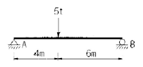
- 150kg/cm2
- 180kg/cm2
- 220kg/cm2
- 260kg/cm2
(정답률: 50%)

2. 그림과 같은 단순보의 중앙(C)점의 횡 모멘트는?
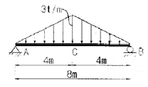
- 8 t·m
- 12 t·m
- 14 t·m
- 16 t·m
(정답률: 23%)
3. 그림과 같은 3활절 아치의 지점 A에서의 지점반력 VA 와 HA 값이 옳은 것은?
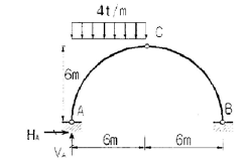
- VA = 18t(↑), HA = 18t(→)
- VA = 18t(↑), HA = 6t(→)
- VA = 18t(↓), HA = 18t(←)
- VA = 18t(↑), HA = 6t(←)
(정답률: 61%)
4. 다음 트러스의 절점 d 에 연직하중 P=6t이 작용할때 부재 cd의 단면력은?
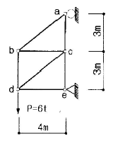
- 0
- 5t(인장)
- 5t(압축)
- 10t(인장)
(정답률: 35%)
5. 트러스를 해석하기 위한 기본가정 중 옳지 않은 것은?
- 부재들은 마찰이 없는 힌지로 연결되어 있다.
- 부재 양단의 힌지 중심을 연결한 직선은 부재축과 일치 한다.
- 모든 외력은 절점에 집중하중으로 작용한다.
- 하중 작용으로 인한 트러스 각 부재의 변형을 고려한다.
(정답률: 52%)
6. 탄성계수 E와 전단탄성계수 G의 관계를 옳게 표시한 식은? (단, ν는 Poisson's비, m은 Poisson's수 이다.)
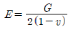
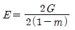
- E=2(1-v)G
- E=0.5(1-m)G
(정답률: 56%)
7. 그림과 같은 내민보의 자유단 A점에서의 처짐 δA는 얼마인가? (단, EI는 일정하다.)
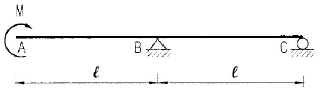
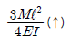
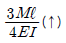
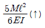
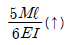
(정답률: 49%)
8. 탄성 에너지에 대한 설명으로 옳은 것은?
- 응력에 반비례하고 탄성계수에 비례한다.
- 응력의 제곱에 반비례하고 탄성계수에 비례한다.
- 응력에 비례하고 탄성계수의 제곱에 비례한다.
- 응력의 제곱에 비례하고 탄성계수에 반비례한다.
(정답률: 62%)
9. 그림과 같은 단면의 도심축(x-x축)에 대한 단면 2차모멘트는?
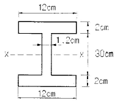
- 15004cm4
- 14004cm4
- 13004cm4
- 12004cm4
(정답률: 59%)
10. 다음 그림과 같은 단순보의 중앙에 집중하중이 작용할 때 단면에 생기는 최대 전단응력은 얼마인가?
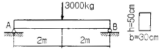
- 1.0kg/cm2
- 1.5kg/cm2
- 2.0kg/cm2
- 2.5kg/cm2
(정답률: 73%)
11. 다음의 2경간 연속보에서 지점A에서 수직 탄력은 얼마인가?
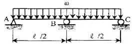
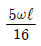
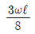
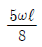
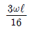
(정답률: 29%)
12. 지름이 D이고 길이 5m의 강봉에 10t의 인장력을 가한 결과 강봉이 0.3m 늘어났다면, 이 강봉의 지름 (D)은? (단, 이 강봉의 탄성계수 E = 2000000kg/cm2이다.)
- 10.3cm
- 11.2cm
- 11.9cm
- 13.0cm
(정답률: 35%)
13. 다음 중 지점(support)의 종류에 해당되지 않는 것은?
- 이동지점
- 자유지점
- 회전지점
- 고정지점
(정답률: 75%)
14. 다음과 같은 L형 단면에서 도심의 위치 x와 y는?
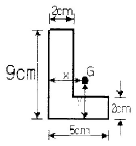
- x=1.625cm, y=3.625cm
- x=2.325cm, y=3.625cm
- x=1.625cm, y=2.325cm
- x=2.325cm, y=1.625cm
(정답률: 35%)
15. 반지름 r인 원형단면의 단주에서 핵반경 e는?
- r/2
- r/3
- r/4
- r/5
(정답률: 72%)
16. 부정정구조물의 해석법 중 3연 모멘트법을 적용하기에 가장 적당한 것은?
- 트러스해석
- 연속보해석
- 라멘해석
- 아치해석
(정답률: 44%)
17. 지름 D인 원형단면에 전단력 S가 작용할 때 최대 전단응력의 값은?
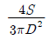
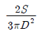
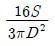
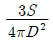
(정답률: 56%)
18. 다음 그림과 같은 보에서 A점의 반력은?
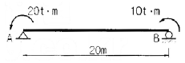
- 1.5t
- 1.8t
- 2.0t
- 2.3t
(정답률: 58%)
19. 그림에서 (a)의 장주(長柱)가 4t에 견딜 수 있다면 (b)의 장주가 견딜 수 있는 하중은?
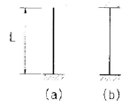
- 4t
- 16t
- 32t
- 64t
(정답률: 29%)
20. 길이 ℓ = 3m의 단순보가 등분포 하중 W = 0.4t/m을 받고 있다. 이 보의 단면은 폭 12cm, 높이 20cm의 사각형 단면이고 탄성계수 E = 1.0 × 105kg/cm2 이다. 이 보의 최대 처짐량을 구하면 몇 cm인가?
- 0.53cm
- 0.36cm
- 0.27cm
- 0.18cm
(정답률: 50%)
2과목: 측량학
21. 하천측량을 실시할 경우 수애선의 기준은?
- 고수위
- 평수위
- 갈수위
- 홍수위
(정답률: 84%)
22. 갑, 을 두 사람이 A, B 두 점간의 고저차를 구하기 위하여 서로 다른 표척을 갖고 여러번 왕복측정한 결과가 갑은 38.994± 0.008m, 을은 39.003±0.004m 일 때, 두 점간 고저차의 최확값은?
- 38.995m
- 38.999m
- 39.001m
- 39.003m
(정답률: 47%)
23. 측량지역의 대소에 의한 측량의 분류에 있어서 지구의 곡률로부터 거리오차에 따른 정확도를 1/107 까지 허용한다면 반지름 몇 km 이내를 평면으로 간주하여 측량할 수 있는가? (단, 지구의 곡률반경은 6,370km 이다.)
- 3.5km
- 7.0km
- 11km
- 22km
(정답률: 29%)
24. 축척 1/1000의 지형도를 이용하여 축척 1/5000 지형도를 제작하려고 한다. 1/5000 지형도 1장의 제작을 위해서는 1/1000 지형도는 몇 장이 필요한가?
- 5매
- 15매
- 25매
- 30매
(정답률: 84%)
25. 지반고 120.50m의 지점 A 에 기계고 1.23m의 트랜싯을 세워 수평거리 90m 떨어진 지점 B에 세운 높이 1.95m의 측선을 시준하면서 부(-)각 30°를 얻었다면 B 점의 지반고는?
- 41.84m
- 65.36m
- 67.82m
- 69.26m
(정답률: 50%)
26. 편각법에 의하여 원곡선을 설치하고자 한다. 극선 반지름이 500m, 시단현이 12.3m일 때 시단현의 편각은?
- 36′ 27″
- 39′ 42″
- 42′ 17″
- 43′ 43″
(정답률: 70%)
27. 측지학 및 측량에 대한 설명으로 옳지 않은 것은?
- 측지학이란 지구 내부의 특성, 지구의 형상, 지구 표면의 상호위치 관계를 정하는 학문이다.
- 기하학적 측지학에는 천문측량, 위성측지, 높이의 결정 등이 있다.
- 물리학적 측지학에는 지구의 형상 해석, 중력의 측정, 지자기 측정 등을 포함한다.
- 측지측량(대지측량)이란 지구의 곡률을 고려하지 않은 측량으로서 11km 이내를 평면으로 취급한다.
(정답률: 70%)
28. 측선의 길이가 85.62m 이고 방위각이 242° 42′ 57″ 일 때 측선위 위거는?
- -39.249m
- 39.249m
- -76.094m
- 76.094m
(정답률: 45%)
29. 다음 도로의 횡단면도에서 AB의 수평거리는?
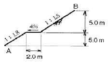
- 8.1m
- 14.3m
- 14.3m
- 18.5m
(정답률: 66%)
30. 원곡선에서 장현 L과 그 중앙종거 M을 측정하여 반지름 R을 구할 때 알맞은 식은?
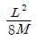
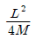
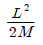
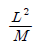
(정답률: 54%)
31. 트래버스의 전체연장이 1.7km이고 위거오차가 +0.4m, 경거오차가 -0.34m 이었다면 폐합비는?
- 1/3186
- 1/4156
- 1/3238
- 1/6168
(정답률: 54%)
32. 노선측량의 완화곡선에 대한 설명 중 옳지 않은 것은?
- 완화곡선의 접선은 시점에서 원호에, 종점에서 직선에 접한다.
- 완화곡선의 반지름은 시점에서 무한대, 종점에서 원곡선 R로 한다.
- 클로소이드 조합형식에는 S형, 복합형, 기본형 등이 있다.
- 모든 클로소이드는 닮은 꼴이며, 클로소이드 요소는 길이의 단위를 가진 것과 단위가 없는 것이 있다.
(정답률: 66%)
33. 측량결과 그림과 같은 지역의 면적은 얼마인가?
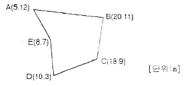
- 66m2
- 80m2
- 132m2
- 160m2
(정답률: 36%)
34. 사진측량을 하기 위하여 비행기가 지상고도 3000m에서 초점거리 150mm의 카메라로 촬영한 수직 사진의 축척은?
- 1:10000
- 1:15000
- 1:20000
- 1:25000
(정답률: 74%)
35. 트래버스 측량의 종류 중 가장 정확도가 높은 방법은?
- 폐합트래버스
- 개방트래버스
- 결합트래버스
- 정확도는 모두 같다.
(정답률: 75%)
36. 등고선의 성질에 대한 설명으로 옳지 않은 것은?
- 경사가 급한 지역은 등고선 간격이 좁다.
- 어느 지점의 최대경사 방향은 등고선과 평행한 방향이다.
- 동일 등고선 상의 지점들은 높이가 같다.
- 계곡선(합수선)은 등고선과 직교한다.
(정답률: 69%)
37. 삼각점간의 평균거리가 약 2km의 삼각측량을 하였을 때 관측한 수평각의 평균을 ± 0.1 까지 구한다면 관측점 및 시준점의 편심을 고려하지 않아도 되는 한도는?
- ±5.8cm
- ± 4.2cm
- ± 3.1cm
- ± 1.2cm
(정답률: 9%)
38. 삼각점에서 3점(1,2,3)의 사이각을 관측하여 x = x2 + x3 - 15"의 결과가 나왔다. 이때 오차에 대한 보정값 배분으로 옳은 것은?
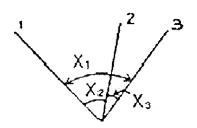
- x1 = -5" , x2 = -5" , x3 = -5"
- x1 = +5" , x2 = -5" , x3 = -5"
- x1 = -5" , x2 = +5" , x3 = +5"
- x1 = +5" , x2 = +5" , x3 = +5"
(정답률: 62%)
39. 그림과 같은 삼각형 토지를 △ABP : △APC = 2:7로 면적을 분할하고자 할 때 BP의 길이는?(단, BC의 길이는 50m임)
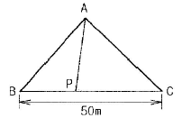
- 15.29m
- 14.29m
- 12.11m
- 11.11m
(정답률: 44%)
40. 초점거리 150mm, 축척 1/20000인 사진을 이용하여 C-factor가 1200인 도화기로 그려 낼 수 있는 최소 등고선 간격은?
- 10m
- 7.5m
- 5m
- 2.5m
(정답률: 19%)
3과목: 수리학
41. 양쪽의 수위가 다른 저수지를 벽으로 차단하고 있는 상태에서 벽의 오리피스를 통하여 ①에서 ②로 물이 흐르고 있을 때 유속은?
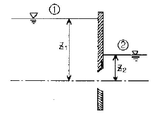
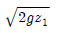
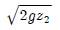
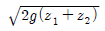
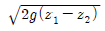
(정답률: 63%)
42. 다음 중 무차원량(無次元量)이 아닌 것은?
- Froude 수
- Reynolds 수
- 비중
- 동점성계수
(정답률: 50%)
43. 부체의 경심(M), 부심(C), 무게중심(G)에 대하여 부체가 안정되기 위한 조건은?
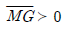
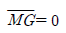
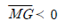
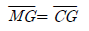
(정답률: 55%)
44. 도수에 대한 설명으로 틀린 것은?
- 흐름이 사류(射流)에서 상류(常流)로 바뀔 때 발생한다.
- 수면이 불연속적으로 상승하는 현상이다.
- 도수가 발생하기 이전의 수심을 한계수심이라고 하고, 도수가 발생한 후의 수심은 대응수심이라 한다.
- 도수 전의 수심과 Froude 수만 알면 도수 후의 수심을 구할 수 있다.
(정답률: 29%)
45. 관수로 내에 층류가 흐를 때 이론적으로 유도되는 유속분포와 마찰응력 분포에 대한 설명으로 옳은 것은?
- 유속분포는 직선이며 마찰응력분포는 포물선이다.
- 유속분포와 마찰응력분포는 똑같이 포물선이다.
- 유속분포는 포물선이며 마찰응력분포는 직선이다.
- 유속분포는 직선이며 마찰응력분포는 대수함수 곡선이다.
(정답률: 37%)
46. 관수로에서 흐름의 지배력은 무엇인가?
- 중력
- 관성력
- 점성력
- 원심력
(정답률: 58%)
47. 흐름 중 상류(常流)에 대한 수식으로 옳지 않은 것은? (단, Hc : 한계수심, Ic : 한계경사, Ve는 한계유속, I : 수로경사, H : 수심, V : 유속)(오류 신고가 접수된 문제입니다. 반드시 정답과 해설을 확인하시기 바랍니다.)
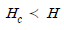
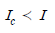
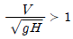
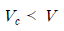
(정답률: 49%)
48. 피압대수층에 대한 설명으로 옳은 것은?
- 피압대수층은 지하수면이 대기와 접하여 대기압만을 받는 대수층이다.
- 피압대수층은 상부는 투수층으로 하부는 불투수층으로 구성되어 있다.
- 피압대수층은 상부와 하부가 불투수층으로 구성되어 있다.
- 피압대수층은 상부는 불투수층으로 하부는 투수층으로 구성되어 있다.
(정답률: 28%)
49. 수조가 2개 있다. 아래쪽 수조는 폭 180cm, 길이 110cm이고, 위쪽 수조는 측벽에 수면으로부터 75cm 아래인 지점에 직경 22mm인 오리피스를 설치하여 아래 수조로 물을 유출시켰더니 8분 15초 동안에 아래 수조의 수심이 23cm 증가하였다. 오리피스의 유량계수는? (단, 위쪽 수조에는 수심이 일정하게 유지된다.)
- 0.623
- 0.631
- 0.642
- 0.675
(정답률: 30%)
50. 사각형 단면의 개수로에서 비에너지의 최소값이 Emin = 1.5m 이라면 단위 폭당의 유량은?
- 1.75m3/sec
- 2.73m3/sec
- 3.13m3/sec
- 4.25m3/sec
(정답률: 47%)
51. 그림과 같은 수압기에서 L : ℓ 의 길이 비가 3 : 1, A의 지름이 5cm, B의 지름이 10cm 이면 힘의 평형을 유지하기 위한 P의 크기는?(단, 그림에서 ° 는 힌지이다.)
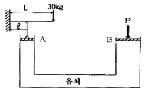
- 200 kg
- 260 kg
- 300 kg
- 360 kg
(정답률: 17%)
52. Froude 수가 1인 흐름을 무엇이라 하는가?
- 상류
- 사류
- 한계류
- 층류
(정답률: 54%)
53. 그림과 같이 폭이 3m인 판으로 물의 흐름을 가로 막았을 때 상류수심은 6m, 하류수심은 3m이었다. 이때 전수압의 작용점 위치(y)는?
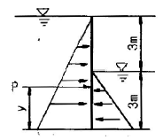
- y = 1.50m
- y = 2.33m
- y = 3.66m
- y = 4.56m
(정답률: 24%)
54. 오리피스에서 유량 Q를 구할 때 수두 H의 측정에 2%의 오차가 있었다면 유량 Q의 계산결과는 얼마의 오차가 생기겠는가?
- 0.25%
- 0.5%
- 1%
- 2%
(정답률: 32%)
55. 유체의 흐름 중에 임의의 단면에서의 에너지 경사선과 동수 경사선과의 수두차(水頭差)는?
- 속도수두
- 압력수두
- 위치수두
- 손실수두
(정답률: 38%)
56. 관수로의 마찰손실수두(hL)에 대한 설명 중 옳지 않은 것은?
- 관의 지름(d)에 비례한다.
- 레이놀즈수(Re)에 반비례한다.
- 관수로의 길이(l)에 비례한다.
- 관내 유속(V)의 제곱에 비례한다.
(정답률: 43%)
57. 수심 4.2m인 오리피스에서 실제유속이 8.801m/sec일 때 유속계수는?
- 0.95
- 0.96
- 0.97
- 0.98
(정답률: 27%)
58. 어떤 관속을 2m//sec 속도로 흐르는 물의 속도수두는?
- 39.282m
- 3.014m
- 2.041m
- 0.204m
(정답률: 34%)
59. 심정(깊은 우물)에서 유량(양수량)을 구하는 식은? (단, H0 : 우물 수심, r0 : 우물 반경, K : 투수계수, R: 영향원 반경, H : 지하수면 수위)
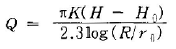
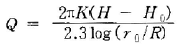
(정답률: 42%)
60. 한계수심 hc와 비에너지 he와의 관계로 옳은 것은? (단, 광폭직사각형 단면인 경우)
(정답률: 46%)
4과목: 철근콘크리트 및 강구조
61. 폭 b=300mm, 유효깊이 d =400mm, 압축철근량 As = 1200mm2, 인장철근량 As=2400mm2이 배근된 복철근보의 탄성처짐이 15mm라 할 때, 5년후 지속하중에 의해 유발되는 장기처짐은 얼마인가?
- 15mm
- 20mm
- 25mm
- 30mm
(정답률: 43%)
62. 철근과 콘크리트가 합성체로서 일체가 되어 입력에 저항할 수 있는 이유에 대한 설명으로 틀린 것은?
- 콘크리트와 철근의 탄성 계수가 비슷하기 때문이다.
- 콘크리트 속에 묻어 둔 철근은 녹이 잘 슬지 않기 때문이다.
- 콘크리트와 철근과의 부착 강도가 비교적 크기 때문이다.
- 콘크리트와 철근의 온도 변화에 대한 선팽창 계수가 거의 같기 때문이다.
(정답률: 46%)
63. 그림과 같은 T형보에 대한 등가직사각형 블록의 깊이(a)는 얼마인가? (단, fck = 21MPa, fy = 400MPa 이다.)
- 40mm
- 70mm
- 120mm
- 150mm
(정답률: 56%)
64. 강도설계법에서 단철근 직사각형 보가 fck=21MPa, fy=300MPa 일 때 균형철근비는?
- 0.34
- 0.034
- 0.044
- 0.0044
(정답률: 66%)
65. 정착길이 아래 300mm를 초과되게 굳지 않은 콘크리트를 친 상부 인장이형철근의 정착길이를 구하려고 한다. fck=21MPa, fy=300MPa을 사용한다면 상부철근으로서의 보정계수를 사용할 때 정착길이는 얼마 이상이어야 하는가? (단, D29 철근으로 공칭지름은 28.6mm, 공칭단면적은 642mm2이고, 기타의 보정계수는 적용하지 않는다.)
- 1461mm
- 1123mm
- 987mm
- 865mm
(정답률: 37%)
66. 전체 길이가 900mm를 초과하는 휨부재 복부의 양 측면에 부재 축방향으로 배치하는 철근은?
- 표피철근
- 배력철근
- 수직스터럽
- 옵셋굽힘철근
(정답률: 62%)
67. 그림에 나타난 직사각형 단철근보의 공칭 절단강도 Vr을 계산하면? (단, 철근 D10을 주식스터럽(stirrup)으로 사용하며, 스터럽 간격은 200mm, 철근 D10 1본의 단면적은 71mm2, fck=28MPa, fy=350MPa이다.)
- 119kN
- 176kN
- 231kN
- 287kN
(정답률: 38%)
68. 하중조합과 하중계수 및 구조물의 안전을 주는 방법에 대한 설명으로 틀린 것은?
- 소요강도는 예상하중을 초과한 하중 및 구조해석 상의 단순화 가정으로 인해 발생되는 초과요인을 고려하여 하중계수를 사용하중에 곱하여 계산한다.
- 부재의 설계강도란 공칭강도에 1.0보다 작은 강도 감소계수를 곱한 값을 말한다.
- 구조물에 풍격의 영향이 작용하는 경우 활하중(L)을 충격효과(I)과 포함된(L+I)로 대체하여 하중조합을 고려하여야 한다.
- 축압축력, 또는 휨모멘트와 축압축력을 동시에 받는 인장지배단면은 강도감소계수가 0.75이다.
(정답률: 28%)
69. 옹벽에서 활동에 대한 저항력은 옹벽에 작용하는 수평력의 최소 몇 배 이상이어야 옹벽이 안정하다고 보는가?
- 1.5배
- 1.8배
- 2.0배
- 2.5배
(정답률: 57%)
70. 다음의 L형강에서 단면의 순단면을 구하기 위하여 전개한 총폭(bg)은 얼마인가?
- 250mm
- 264mm
- 288mm
- 300mm
(정답률: 43%)
71. 판형에서 보강재(stiffener)의 사용목적은?
- 보 전체의 비틀림에 대한 강도를 크게하기 위함이다.
- 복부판의 전단에 대한 강도를 높이기 위함이다.
- flange angle의 간격을 넓게하기 위함이다.
- 복부판의 좌굴을 방지하기 위함이다.
(정답률: 59%)
72. 흙과 접하거나 옥외의 공기에 직접 노출되는 현장치기 콘크리트의 최소 피복두께는 얼마인가?(단, D25이하의 철근으로서 D16보다는 직경이 큰 경우이다)
- 80mm
- 60mm
- 50mm
- 40mm
(정답률: 44%)
73. 다음 그림의 고장력 볼트 마찰이음에서 필요한 볼투 수는 몇 개인가? (단, 볼트는 M24(=ø24mm),F10T를 사용하며 마찰이음의 허용력은 56kN이다.)
- 5개
- 6개
- 7개
- 8개
(정답률: 55%)
74. 그림과 같은 띠철근기둥이 있다. D13철근을 띠철근으로 사용한다면 띠철근의 수직 간격은 최대 얼마이하로 하여야 하는가?(단, D13철근의 공칭지름은 12.7mm ,D35철근의 공칭지름은 34.9mm이다.)
- 512mm
- 558mm
- 600mm
- 610mm
(정답률: 46%)
75. 보의 유효높이 600mm, 복부의 폭 320mm, 플랜지의 두께 130mm, 주형의 중심간 거리 2.5mm, 지간 10.4mm로 설계된 대칭 T형은 형태의 보가 있다. 이 보의 플랜지의 유효폭은?
- 2080mm
- 2400mm
- 2500mm
- 2600mm
(정답률: 60%)
76. PS 콘크리트에서 프리스트레스를 도입한 이후에 일어나는 프리스트레스 시간적 손실의 원인이 아닌 것은?
- 콘크리트의 탄성변형
- 콘크리트의 크리프
- 콘크리트의 건조수축
- PS강재의 릴랙세이션(relaxation)
(정답률: 47%)
77. 단면이 300x500mm이고, 100mm2의 PS 강선 6개를 강선군의 도심과 부재단면의 도심축이 일치하도록 배치된 프리텐션 PC보가 있다. 강선의 초기 긴장력이 1000MPa일 때 콘크리트의 탄성변형에 의한 플리스트레스의 감소량은? (단, n = 6)
- 42MPa
- 36MPa
- 30MPa
- 24MPa
(정답률: 46%)
78. 계수하중이 아래 그림과 같은 단철근 직사각형보의 전단에 대한 위험단면에서의 전단력은 얼마인가?
- 120N
- 180N
- 200N
- 240N
(정답률: 43%)
79. 사용 고정하중(D)과 활하중(L)을 작용시켜서 단면에서 구한 휨모멘트는 각각 MD=10kN·m, ML=20kN·m 이었다. 주어진 단면에 대해서 현행 콘크리트구조설계 기준에 의거 최대 소요강도를 구하면?
- 33kN·m
- 39.6kN·m
- 40.8kN·m
- 44kN·m
(정답률: 59%)
80. 보에 작용하는 계수 전단력 Vc=50kN을 콘크리트 만으로 지지 할 경우 필요한 유효깊이 d의 최소값은 약 얼마인가?(단, bn = 350mm, fck = 22MPa, fy = 400MPa)
- 326mm
- 488mm
- 532mm
- 550mm
(정답률: 35%)
5과목: 토질 및 기초
81. 모래 치환법에 의한 흙의 들밀도 실험결과가 아래와 같다. 현장 흙의 건조단위중량은?
- 0.93g/cm3
- 1.13g/cm3
- 1.33g/cm3
- 1.53g/cm3
(정답률: 65%)
82. 어떤 흙의 입경가적곡선에서 D10=0.⑤mm, D30=0.09mm, D60=0.15mm이었다. 균등계수 Cu와 곡률계수 Cg의 값은?
- Cu=3.0, Cg=1.08
- Cu=3.5, Cg=2.08
- Cu=3.0, Cg=2.45
- Cu=3.5, Cg=1.82
(정답률: 46%)
83. 점성토 지반에 있어서 강성기초의 접지압 분포에 관한 다음 설명 중 옳은 것은?
- 기초의 모서리 부분에서 최대 응력이 발생한다.
- 기초의 중앙부에서 최대 응력이 발생한다.
- 기초의 밑면 부분에서는 어느 부분이나 동일하다.
- 기초의 모서리 및 중앙부에서 최대 응력이 발생한다.
(정답률: 58%)
84. 유효응력으로 구한 강도정수가 c =2.0t/m2, δ' =452인 어떤 흙의 가상파괴면에 수직음력이 10t/m2 간극 수압이 5t,m2 작용하고 있을 때, 전단 강도는?
- 2t/m2
- 5t/m2
- 7t/m2
- 12t/m2
(정답률: 30%)
85. 함수비 20%의 자연상태의 흙 2400g을 함수율 25%로 하고자 한다면 추가해야 할 물의 양은?
- 500g
- 400g
- 120g
- 100g
(정답률: 57%)
86. 절편법에 의한 사면의 안정해석시 가장 먼저 결정되어야 할 사항은?
- 가상활동면
- 절편의 중량
- 활동면상의 점참력
- 활동면상의 내부마찰각
(정답률: 57%)
87. 연약지반개량공사에서 성토하중에 의해 압밀된 후 다시 추가하중을 재하한 직후의 안정검토를 할 경우 삼축압축시험 중 어떠한 시험이 가장 좋은가?
- CD시험
- UU시험
- CU시험
- 급속전단시험
(정답률: 54%)
88. 어떤 모래의 입경가적곡선에서 유효입경 D10=0.01mm이었다. Hazen 공식에 의한 투수계수는? (단, 상수(C)는 100을 적용한다.)
- 1x10-4cm/sec
- 1x10-6cm/sec
- 5x10-4cm/sec
- 1x10-6cm/sec
(정답률: 37%)
89. 원주상의 궁사체에서 수직응력이 1.0kg/cm2일 때 공시체의 각도 30˚ 경사면에 작용하는 전단응력은?
- 0.17kg/cm2
- 0.22kg/cm2
- 0.35kg/cm2
- 0.43kg/cm2
(정답률: 27%)
90. 평판저하시험 결과 이용시 고려하여야 할 사항으로 거리가 먼 것은?
- 시험한 현장 지반의 토질중단을 알아야 한다.
- 지하수위의 변동 상황을 고려하여야 한다.
- Scale Effect를 고려하여야 한다.
- 시험기계의 종류를 알아야 한다.
(정답률: 30%)
91. 말뚝의 지지력을 결정하기 위해 엔지니어링 뉴스 (Engineering-News)공식을 사용할 때 안전율은 얼마 정도로 적용하는가?
- 1
- 2
- 3
- 6
(정답률: 50%)
92. 단위중량이 1.6t/m3인 연약점토 (ø = 0˚)지반에서 연직으로 2m까지 보강없이 절취할 수 있다고 한다. 이 때, 이 점토지반의 점착력은?
- 0.4t/m3
- 0.8t/m3
- 1.4t/m3
- 1.8t/m3
(정답률: 56%)
93. 흙의 다짐에 대한 설명으로 틀린 것은?
- 사질토의 최대 건조단위중량은 점성토의 최대 건조 단위 중량보다 크다.
- 점성토의 최적함수비는 사질토의 최적함수비 보다 크다.
- 영공기 간극곡선은 다짐곡선과 교차할 수 없고, 항상 다짐곡선의 우측에만 위치한다.
- 유기질 성분을 많이 포함할수록 흙의 최대 건조단위중량과 최적함수비는 감소한다.
(정답률: 24%)
94. 점토 지반에서 직경 30cm의 평판재해시험 결과 30t/m2 의 압력이 작용할 때 침하량이 5mm 라면, 직경 1.5m의 실제기초에 30t/m2의 하중이 작용할 때 침하량의 크기는?
- 2mm
- 50mm
- 14mm
- 25mm
(정답률: 44%)
95. Darcy의 법칙 q= kiA에 대한 설명으로 틀린 것은?
- k는 투수계수로서 조립토는 크고, 세립토는 작다.
- i는 동수경사로 수두차를 물이 흙속으로 흘러간 거리로 나눈 값이다.
- Darcy의 평균유속은 실제유속보다 크다.
- Darcy의 법칙은 층류일 때만 성립한다.
(정답률: 40%)
96. 두께 5m의 점토층이 있다. 압축전의 간극비가 1.32, 압축후의 간극비가 1.10 으로 되었다면 이 토층의 압밀침하량은 약 얼마인가?
- 68cm
- 58cm
- 52cm
- 47cm
(정답률: 39%)
97. 그림과 같은 옹벽에 작용하는 전체 주등토암을 구하면? (단, 뒷채움 흙의 단위중량 1.72t/m3, 내부마찰각 (σ)=30°)
- 5.72t/m
- 6.55t/m
- 7.25t/m
- 8.15t/m
(정답률: 40%)
98. 흙의 투수계수에 영향을 미치는 인자가 아닌 것은?
- 흙의 입경
- 흙의 비중
- 물의 점성
- 흙의 간극비
(정답률: 63%)
99. 그림에서 모관수에 의해 A - A면까지 완전히 포화되었다고 가정하면 B - B면에서의 유효응력은 얼마인가?
- 6.3t/m2
- 7.2t/m2
- 8.2t/m2
- 12.2t/m2
(정답률: 32%)
100. 100t의 집중하중이 적용할 때 작용점의 직하 5m 지점의 연직 응력은? (단, 영향계수는 0.4775 이다.)
- 0.38t/m2
- 1.91t/m2
- 9.55t/m2
- 238.75t/m2
(정답률: 31%)
6과목: 상하수도공학
101. 인구 1인당 생활오수의 BOD오염부하 원단위를 50g/인˙일이라 할 때 인구 10만 도시의 하수처리장에 유입되는 BOD 부하는?
- 50ton/일
- 5000kg/일
- 500kg/일
- 50kg/일
(정답률: 38%)
102. 다음과 같은 조건에서의 급속여과지 면적은?
- 5.0 m2
- 8.33 m2
- 12.5 m2
- 14.58 m2
(정답률: 52%)
103. 하천수를 취수하는 경우, 취수예정지점의 조사에 필요한 유량과 수위 중 갈수유량과 갈수(수)위에 대한 설명으로 옳은 것은?
- 1년을 통하여 95일은 이보다 낮지 않은 수량과 수위
- 1년을 통하여 185일은 이보다 낮지 않은 수량과 수위
- 1년을 통하여 275일은 이보다 낮지 않은 수량과 수위
- 1년을 통하여 355일은 이보다 낮지 않은 수량과 수위
(정답률: 40%)
104. 분류식 계통에 비교하여 합류식 하수관거 계통의 특징에 대한 설명으로 옳지 않은 것은?
- 하수처리장에서 오수 처리비용이 많이 소요된다.
- 청천시 관내에 오염물이 침전되기 쉽다.
- 오수관거와 우수관거의 2계통을 건설하는 것보다 건설비용이 크게 소요된다.
- 검사 및 관리가 비교적 용이하다.
(정답률: 52%)
1⑤. 하수관거의 접합에 있어서 경사가 급한 경우에 원칙적으로 적용 가능한 접합 방법은?
- 관정접합
- 수면접합
- 단차접합
- 관저접합
(정답률: 47%)
106. 상수도 시설의 설계시 계획취수량, 계획도수량, 계획정수량의 기준이 되는 것은?
- 계획시간 최대급수량
- 계획1일 최대급수량
- 계획1일 평균급수량
- 계획1일 총급수량
(정답률: 62%)
107. 염소소독에 대한 설명으로 옳지 않은 것은?
- 염소소독에 의해 THM(Trihalomethane)의 생성을 촉진시키는 것이 좋다.
- 온도가 높을수록 살균력이 증가한다.
- 수중에 암모니아화합물이 많으면 결합염소가 생성된다.
- 살균능력은 HOCl ＞ OCl- ＞ NH2Cl 이다.
(정답률: 36%)
108. 펌프의 설치대수 및 용량을 결정할 때 고려하여야 할 사항에 대한 설명으로 틀린 것은?
- 펌프의 설치는 유지관리상 가능한 동일용량의 것으로 한다.
- 펌프의 가능한 최고효율점 부근에서 운전하도록 대 수 및 용량을 정한다.
- 펌프의 용량이 적을수록 효율이 높으므로 가능한 소용량의 것을 여러 대 배치한다.
- 건설비를 절약하기 위해 예비는 가능한 대수를 적게 하고 소용량으로 한다.
(정답률: 49%)
109. 도·송수관을 설계할 때, 자연유하식인 경우의 평균유속 최소한도는?
- 0.1m/sec
- 0.2m/sec
- 0.3m/sec
- 0.5m/sec
(정답률: 61%)
110. 반송슬러지 농도를 XR, 슬러지반송비를 R이라 할때, 반응조내의 MLSS 농도 X를 구하는 식은? (단, 유입수의 SS는 무시함)
(정답률: 44%)
111. 하수도계획의 기본 조사에서 하수 방류지점의 위치결정과 펌프 양정 결정에 이용하는 하천조사에 속하는 것은?
- 하천과 수로의 종횡단면도
- 지하수위와 지반침하상황
- 지형도
- 지질도
(정답률: 47%)
112. 하수관거의 관부정식을 유발하는 주요 원인 물질은?
- 질소 화합물
- 칼슘 화합물
- 철 화합물
- 황 화합물
(정답률: 57%)
113. 응집침전에 주로 사용되는 응집제가 아닌 것은?
- 황산알루미늄(aluminium sulfate)
- 염화제2철(ferric chloride)
- 황산제1철(ferrous sulfate)
- 벤토나이트(bentonite)
(정답률: 47%)
114. 활성슬러지의 침강성을 보여주는 지표로서 슬러지 팽화(sludge bulking)여부를 확인하는 지표가 되는 것은?
- MLSS
- MLVSS
- SRT
- SVI
(정답률: 47%)
115. 1인1일 평균급수량의 도시조건에 따른 일반적인 경향에 대한 설명으로 옳지 않은 것은?
- 도시규모가 클수록 수량이 크다.
- 도시의 생활수준이 낮을수록 수량이 크다.
- 기온이 높은 지방은 추운 지방보다 수량이 크다.
- 정액급수의 수도는 계량급수의 수도보다 수량이 크다.
(정답률: 67%)
116. 슬러지 처리과정 중 슬러지의 부피를 감소시키고 취급이 용이하도록 만들 목적으로 슬러지의 함수율을 감소시키는 과정은?
- 개량
- 소화
- 탈수
- 소각
(정답률: 45%)
117. 수원에 대한 설명 중 틀린 것은?
- 천층수는 지표면에서 깊지 않은 곳에서 위치함으로 써 공기의 투과가 양호하므로 산화작용이 활발하게 진행된다.
- 심층수는 대지의 정화작용으로 무균 또는 거의 이에 가까운 것이 보통이다.
- 용천수는 지하수가 자연적으로 지표로 솟아나온 것으로 그 성질은 대개 지표수와 비슷하다.
- 복류수는 대체로 수질이 양호하여 정수공정에서 침전지를 생략하는 경우도 있다.
(정답률: 42%)
118. 하수관거의 길이가 1.8km인 하수관거 내에서 우수가 1.5m/sec의 유속으로 흐르고, 유입시간이 8분일 때 유달시간은 얼마인가?
- 8분
- 18분
- 28분
- 38분
(정답률: 42%)
119. 배수지에 관한 설명으로 틀린 것은?
- 급수량의 시간적 변화에 대응하기 위해 설치한다.
- 단수 등의 비상시에 대비하기 위해 설치한다.
- 배수관내의 누수량을 줄이기 위해 설치한다.
- 계획1일최대급수량의 일정시간 분량을 저장한다.
(정답률: 28%)
120. 유량이 0.1m3/sec의 물을 30m 높이로 양수하려고 한다. 관로의 마찰에 의한 손실수두가 5m, 그 밖의 양수시 발생되는 손실수두가 3m라면 이 펌프에 필요한 축동력은? (단, 펌프의 효율은 85% 이다.)
- 43.8kW
- 59.6kW
- 65.4kW
- 70.3kW
(정답률: 33%)
최대 횡응력 = (최대 전단력) / (단면적 * sin(45도))
최대 전단력은 3000kg, 단면적은 30cm * 40cm = 1200cm^2 이므로,
최대 횡응력 = (3000kg) / (1200cm^2 * sin(45도)) = 150kg/cm^2
따라서 정답은 "150kg/cm^2" 이다.